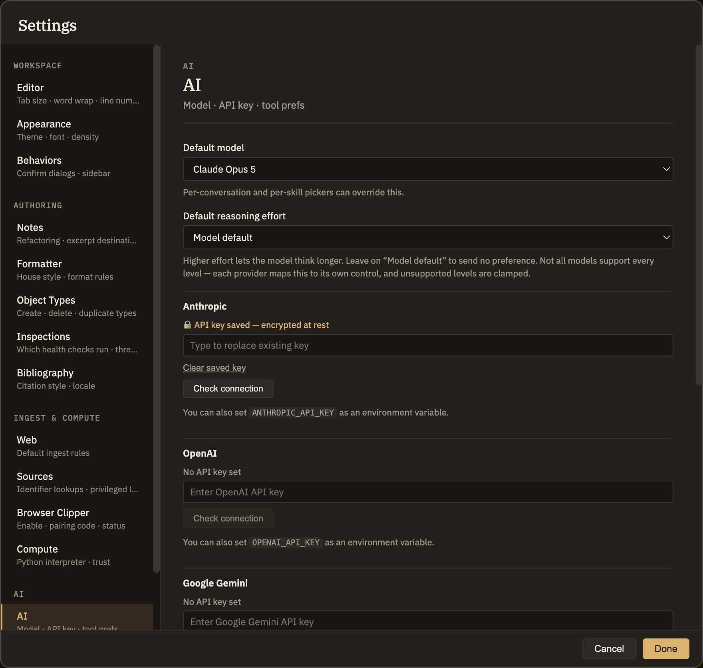

AI
This tab sets what every new conversation starts with — which AI model it uses and how hard that model thinks — plus your API key and voice dictation. If you want a particular thinking tool to use a different model, that's set on the Skills tab; here you're just setting the defaults everything else falls back to.
Default model and effort
Two dropdowns pick the starting point for a fresh conversation. They're only defaults: each conversation has its own model and effort pickers that override them for that conversation, and changing them here never disturbs a conversation you already have open.
API key
Minerva's AI features need an API key, which you paste into this field. A line above the field tells you whether a key is already saved. For your privacy the saved key is never shown back to you, and it can't be copied out of the field.
Voice dictation
Turn on Enable voice dictation to speak instead of type, and pick a voice model from the dropdown beside it. Dictation runs entirely on your own machine — your audio never leaves it. The first time you use it, the voice model downloads once and is then ready to use offline.
